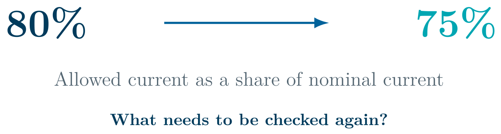
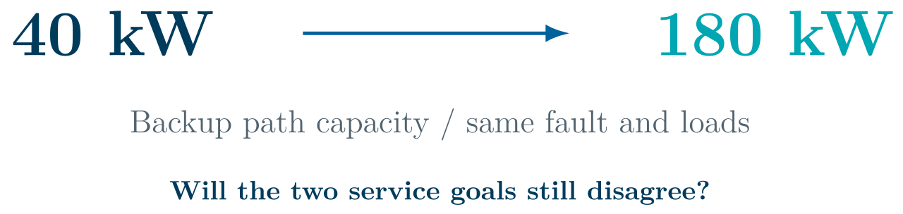
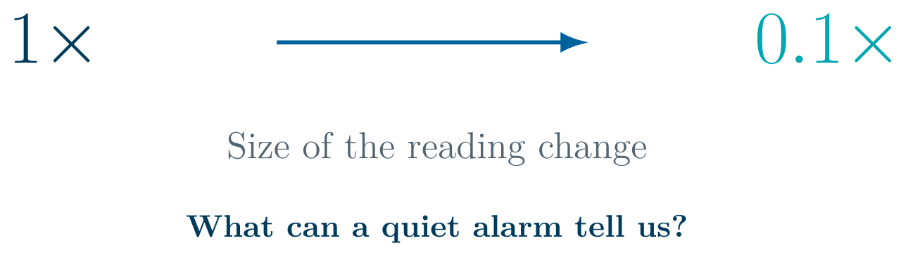

Three Operator Cases: exercises
Predict the result and explain one supporting reason. Each exercise has its own time allowance.
Discuss each what-if question using the prepared figures. No software is needed. The following slide gives the calculated answer.
What if we allow less current?
Presentation slide 16 · 6 minutes.

- Reduce the allowance from 80% to 75% of nominal current.
- Which proposal might fail? Which would you choose if both pass?
- What must the agent ask the tool to check again?
Result, supporting check, and next step:
What if the backup path can carry more power?
Presentation slide 28 · 6 minutes.

- Increase its capacity from 40 kW to 180 kW. Keep the fault and loads the same.
- Would the two service goals still give different results?
- What should the agent recalculate before reporting the new plan?
Result, supporting check, and next step:
What if the data change is small?
Presentation slide 41 · 6 minutes.

- Reduce the change to one tenth of the reference size.
- Will the alarm always detect the error?
- What else would the operator need before trusting the readings?
Result, supporting check, and next step: